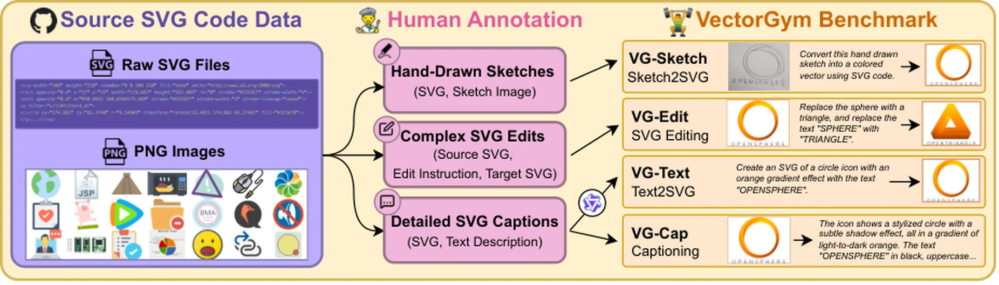
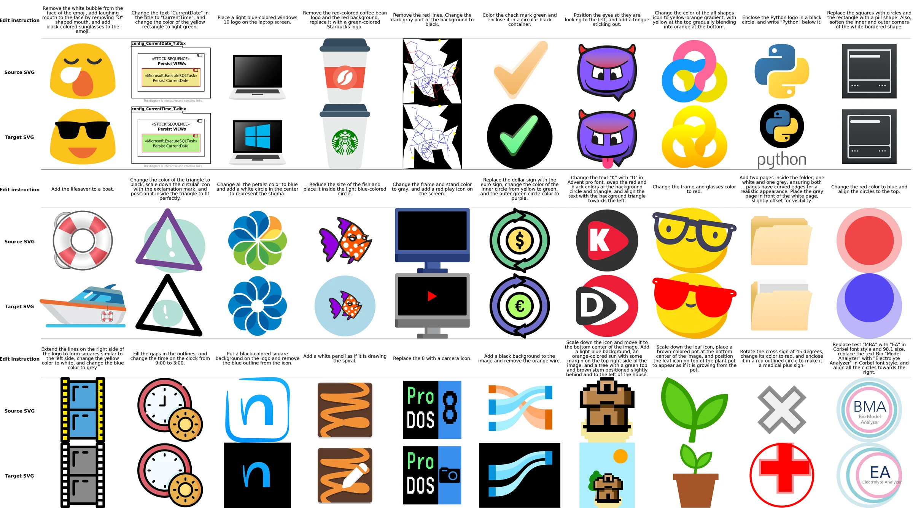
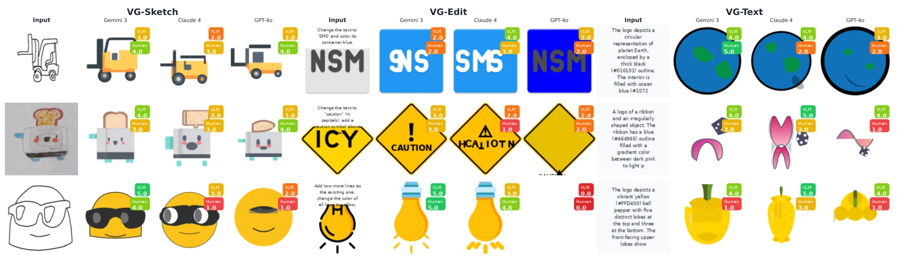

VG-Sketch
Sketch2SVG
Turn a rough, hand-drawn sketch into clean SVG code. The model has to infer structure, topology and spatial relations from noisy, incomplete strokes rather than trace a clean image. This task is new in VectorGym.
EMNLP 2026 · Benchmark
A Multi-Task Benchmark for SVG Code Generation, Sketching and Editing
Four tasks with expert human annotations: turning sketches into SVG, editing SVG code, generating SVG from text, and captioning SVG.

* Equal contribution.
01 · Tasks
An SVG is a program: its code exposes geometry, style and structure, and it maps directly to a rendered image. That lets one benchmark check visual fidelity, valid syntax and structured manipulation together.
VG-Sketch
Turn a rough, hand-drawn sketch into clean SVG code. The model has to infer structure, topology and spatial relations from noisy, incomplete strokes rather than trace a clean image. This task is new in VectorGym.
VG-Edit
Apply a natural-language edit to an existing SVG. Human-written edits add objects, change logo text, turn a pie chart into a bar chart or change a facial expression, and often use text, gradients or animation.
VG-Text
Generate a complete SVG from a description, from simple shapes to detailed illustrations. The descriptions come from human-validated captions rewritten as instructions at several levels of detail.
VG-Cap
The inverse of Text2SVG: read SVG code and describe what it shows, covering both the content and visual properties such as style and color scheme.
02 · Data
VectorGym is built from SVG-Stack, a collection of SVGs gathered from GitHub: icons, diagrams, emojis, fonts, logotypes and complex illustrations, with their original primitives intact. More than 20 annotators from two annotation vendors, with backgrounds in design, vector graphics and coding, drew the sketches, wrote the edits and described the graphics.
Filtering kept SVGs of 2k to 8k tokens with normalized color entropy above 0.55, then sampled them for human inspection.

| Dataset | SVG type | Samples | Multi-task | Primitives | Edits | Sketches | Human |
|---|---|---|---|---|---|---|---|
| SVGBench | In-the-wild | 10k | – | ✓ | – | – | – |
| VGBench | Emojis | 9.5k | ✓ | – | – | – | – |
| SVGEditBench | Emojis | 1.6k | – | – | ✓ | – | – |
| SVGEditBench V2 | Emojis | 1.6k | – | – | ✓ | – | – |
| UniSVG | Icons | 525k | ✓ | – | – | – | – |
| SVGenius | Icons | 100k | ✓ | – | ✓ | – | – |
| VectorGym | In-the-wild | 7k | ✓ | ✓ | ✓ | ✓ | ✓ |
03 · Method
The baseline fine-tunes Qwen3-VL 8B Instruct with Reinforcement Learning from Rendering Feedback (RLRF) on the VectorGym training split, all four tasks at once.
For the three generation tasks, the predicted and reference SVGs are rendered to images and compared with perceptual similarity and pixel-space distances. For captioning, the reward is the BGE-M3 embedding similarity between the predicted and reference text.
Standard GRPO normalizes rewards within each group of sampled responses. Here the centered rewards are divided by the standard deviation over the whole mini-batch:
Response length stands in for difficulty. Samples are sorted by length within each task, and mini-batches draw tasks in proportion to their frequency, so training moves from short, simple examples to long, complex ones while keeping the tasks balanced.
04 · Results
The VectorGym score averages four task scores on a 0 to 100 scale. Gemini 3 Pro leads overall. The RL-trained Qwen3-VL 8B scores 66.05, above GPT-4o (64.93) and the much larger Qwen3-VL 235B (62.32).
Proprietary Open-source RL baseline
Difficulty
Best VLM-judge scores: Text2SVG 93.00 (GPT-5.1), SVG editing 81.20, Sketch2SVG 72.20 and SVG captioning 70.40 (all Gemini 3 Pro).
Sketches
On Sketch2SVG, the open Qwen3-VL 235B and 8B reach VLM-judge scores of 40.00 and 33.00. RL raises the 8B model to 46.00, still well below Gemini 3 Pro at 72.20. Models also rarely add color that the sketch does not have.
Captioning
The RL model has the highest BGE-M3 (79.76) and ROUGE (25.58) of any model, yet a lower VLM-judge score (35.80) than Qwen3-VL 235B (40.40).

| Model | Sketch2SVG | SVG editing | ||||||||
|---|---|---|---|---|---|---|---|---|---|---|
| VLM J ↑ | MSE ↓ | DINO ↑ | LPIPS ↓ | Score ↑ | VLM J ↑ | MSE ↓ | DINO ↑ | LPIPS ↓ | Score ↑ | |
| Open-source | ||||||||||
| Qwen2.5-VL 72B | 12.80 | 16.43 | 69.87 | 43.95 | 55.57 | 16.60 | 18.68 | 70.35 | 38.21 | 57.52 |
| Qwen2.5-VL 32B | 17.80 | 15.15 | 71.63 | 42.65 | 57.91 | 20.20 | 17.04 | 72.31 | 37.05 | 59.61 |
| GLM-4.5V | 33.80 | 14.14 | 78.61 | 41.35 | 64.23 | 37.60 | 13.39 | 80.90 | 31.76 | 68.34 |
| Qwen3-VL 8B | 33.00 | 13.76 | 81.01 | 40.97 | 64.82 | 57.40 | 11.01 | 90.44 | 25.27 | 77.89 |
| Qwen3-VL 235B | 40.00 | 13.37 | 83.69 | 40.23 | 67.52 | 60.40 | 9.02 | 91.17 | 22.11 | 80.11 |
| Qwen3-VL 8B Gym (ours) | 46.00 | 11.99 | 88.25 | 39.37 | 70.72 | 67.00 | 8.36 | 93.94 | 21.34 | 82.81 |
| Proprietary | ||||||||||
| Gemini 2.5 Flash | 36.80 | 13.67 | 79.13 | 40.45 | 65.45 | 65.80 | 9.98 | 90.54 | 21.16 | 81.30 |
| GPT-4o | 46.00 | 13.17 | 85.11 | 39.74 | 69.55 | 66.80 | 8.43 | 92.27 | 21.24 | 82.35 |
| Claude Sonnet 4.5 | 58.80 | 12.54 | 88.42 | 39.29 | 73.85 | 79.40 | 6.29 | 95.61 | 16.46 | 88.07 |
| GPT-5.1 | 64.00 | 12.28 | 89.47 | 38.42 | 75.69 | 78.00 | 5.92 | 95.59 | 16.83 | 87.71 |
| Gemini 3 Pro | 72.20 | 11.31 | 89.78 | 36.43 | 78.56 | 81.20 | 5.89 | 95.55 | 16.01 | 88.71 |
| Model | Text2SVG | SVG captioning | ||||||
|---|---|---|---|---|---|---|---|---|
| VLM J ↑ | CLIP ↑ | DINO ↑ | Score ↑ | VLM J ↑ | BGE-M3 ↑ | ROUGE ↑ | Score ↑ | |
| Open-source | ||||||||
| Qwen2.5-VL 72B | 25.80 | 25.78 | 71.00 | 40.86 | 9.60 | 52.08 | 7.70 | 23.13 |
| Qwen3-VL 8B | 55.20 | 29.48 | 81.71 | 55.46 | 25.20 | 66.27 | 18.87 | 36.78 |
| GLM-4.5V | 59.40 | 28.91 | 80.44 | 56.25 | 38.00 | 62.85 | 16.86 | 39.24 |
| Qwen2.5-VL 32B | 22.60 | 24.95 | 68.96 | 38.84 | 38.40 | 66.10 | 16.35 | 40.28 |
| Qwen3-VL 235B | 66.80 | 29.60 | 82.63 | 59.68 | 40.40 | 67.14 | 18.33 | 41.96 |
| Qwen3-VL 8B Gym (ours) | 72.80 | 30.55 | 87.46 | 63.60 | 35.80 | 79.76 | 25.58 | 47.05 |
| Proprietary | ||||||||
| GPT-4o | 74.60 | 30.43 | 84.23 | 63.09 | 46.00 | 66.82 | 21.33 | 44.72 |
| Gemini 2.5 Flash | 54.00 | 27.67 | 77.65 | 53.11 | 45.80 | 69.24 | 22.45 | 45.83 |
| Claude Sonnet 4.5 | 89.00 | 30.91 | 87.66 | 69.19 | 59.20 | 70.17 | 21.08 | 50.15 |
| GPT-5.1 | 93.00 | 30.83 | 88.20 | 70.68 | 62.20 | 70.45 | 21.49 | 51.38 |
| Gemini 3 Pro | 89.80 | 30.87 | 89.09 | 69.92 | 70.40 | 72.27 | 23.83 | 55.50 |
Bold marks the best value in each column. Numbers are copied from the camera-ready paper (arXiv v2).
05 · Citation
@misc{rodriguez2026vectorgym,
title = {VectorGym: A Multi-Task Benchmark for SVG Code Generation,
Sketching and Editing},
author = {Joan Rodriguez and Haotian Zhang and Abhay Puri and Haoran Dai and
Tianyang Zhang and Meng Lin and Rishav Pramanik and Xiaoqing Xie and
Marco Terral Rodriguez and Darsh Kaushik and Aly Shariff and
Perouz Taslakian and Spandana Gella and Sai Rajeswar and
David Vazquez and Christopher Pal and Marco Pedersoli},
year = {2026},
eprint = {2603.29852},
archivePrefix = {arXiv},
primaryClass = {cs.GR},
note = {Accepted to EMNLP 2026}
}